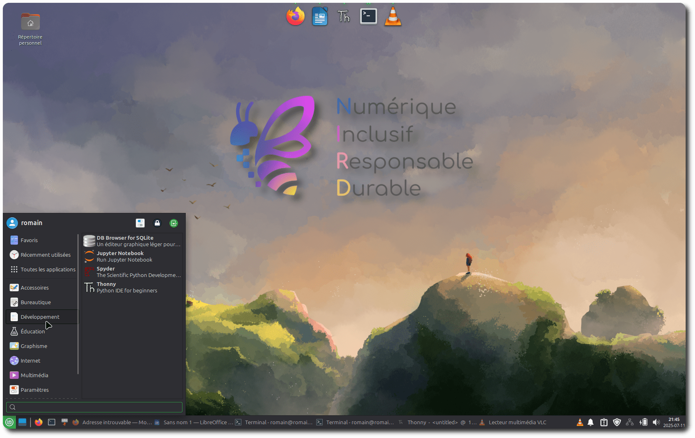
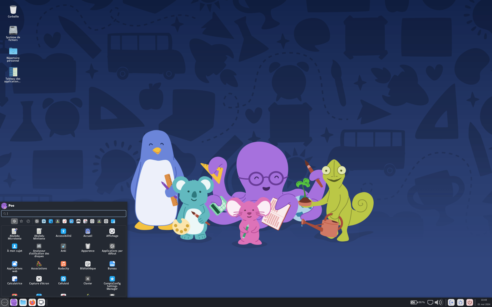
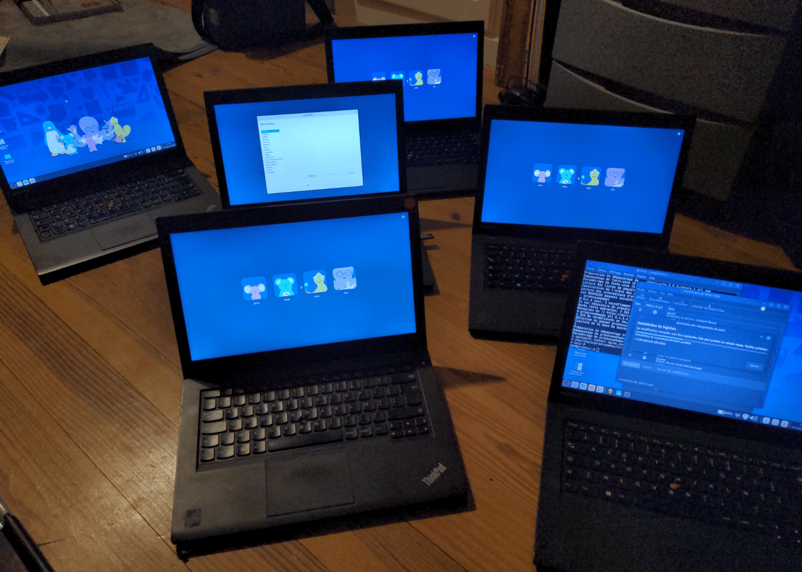

Vous trouverez sur cette page une proposition de deux distributions Linux, PrimTux pour le primaire et Linux NIRD pour secondaire, ainsi qu'un argumentaire justifiant ce choix.
⚠️ La distribution Linux que nous vous proposons ci-dessous peut également aider les lycées des Hauts-de-France à traverser la crise actuelle : on peut l'utiliser hors connexion, elle peut se lancer depuis une clé USB (sans toucher au système en place), on peut l'installer sur du matériel ancien par reconditionnement et elle contient l'essentiel des logiciels pour le second degré (spécialité NSI comprise).
Notre distribution « Linux NIRD » pour le secondaire

Fruit de l'expérience et de l'expertise des enseignants du lycée Carnot, la démarche vous propose une distribution GNU/Linux adaptée au secondaire dont vous trouverez l'image à télécharger ci-dessous (on dit aussi master ou iso). C'est une toute première version 0.1, nous la ferons évoluer ensemble au fil du temps. En voici une courte présentation vidéo (2 min).
Attention ! Cette distribution peut rendre bien des services (cf ci-dessous) mais elle n'est pas configurée pour s'intégrer directement en l'état dans le réseau mis en place par votre collectivité (contactez directement votre collectivité pour envisager cela ensemble).
Avantages de cette distribution :
- Elle est créée, testée et maintenue par des enseignants et acteurs de l'éducation.
- Elle possède un forum Tchap dédié pour accueillir et accompagner les utilisateurs, notamment les débutants
- Elle est légère (Linux Mint + Xfce + dock Plank). Ainsi elle pour tourner sur des machines même anciennes.
- Elle s'installe par reconditionnement sur des PC trop lents ou dormants dans les placards des établissements scolaires (pour par exemple en faire démonstration en salle des professeurs). Ce reconditionnement pouvant se faire par les élèves eux-mêmes au sein d'un club-informatique.
- Elle fonctionne sans avoir besoin de connexion Internet (si absence temporaire ou permanente de connexion, si situation de crise comme récemment dans les Hauts-de-France).
- Elle dispose d'une suite complète de logiciels libres optimisée pour un usage scolaire en collège et en lycée (dont la spécialité NSI).
- Elle est bootable sur clé USB (sans rien toucher au système).
- Elle offre une distribution clé en main aux enseignantes et enseignants qui souhaiteraient migrer leur PC perso de Windows vers Linux.
- Elle peut être utile aux collectivités qui souhaiteraient demain intégrer Linux dans le parc de leurs établissements scolaires. Par ses choix techniques, sa sélection de logiciels natifs, ses ressources éducatives libres, sa communauté sur Tchap assurant un support de premier niveau, elle peut servir de base ou de modèle à une distribution adaptée au réseau de la collectivité.
Le fond d'écran est l'œuvre de l'illustratrice Juliette Taka avec ajout du logo de la démarche NIRD (cf image ci-dessus).
Image à télécharger et graver sur clé USB
Version avec installeur
Si vous voulez installer la distribution sur votre machine :
- Image de la distribution Linux NIRD à télécharger : lien direct.
- Clé md5 pour vérification de l'image téléchargée.
Version clef USB, sans installeur, et compte eleve sans droits
Avec cette version, il faut se connecter à un compte eleve/eleve. Le compte eleve a
toutefois accès à l'installation de logiciels sur la clef, le temps de la session. Ce compte autorise le
formatage ou la gravure des clés USB.
- Image de la distribution Linux NIRD version clef USB à télécharger : lien direct.
- Clé md5 pour vérification de l'image téléchargée.
Graver l'image
Il convient ensuite de graver l'image sur une clé USB. (attention, vous perdez les données présentes sur cette clé). Ce n'est pas une simple copie, un PC peut démarrer sur l'image ainsi gravée.
-
Utiliser l'outil Ventoy permet d'utiliser la clé comme stockage. Idéal si vous utilisez le système sur clé.
-
Balena Etcher, Rufus ou tout autre logiciel de gravure d'image conviennent mais la clé sera exclusivement réservée à cet usage.
Trop compliqué ? Venez demander des conseils sur notre forum Tchap !
La distribution PrimTux pour le primaire

Linux dans les écoles primaires, c'est PrimTux !
Dans le cadre de la démarche NIRD, l'installation de PrimTux dans les écoles primaires permet d'équiper durablement les classes tout en réduisant les coûts. PrimTux, distribution libre conçue par et pour des enseignants, intègre de très nombreuses ressources numériques pédagogiques, fonctionne sur du matériel neuf ou reconditionné et s'adapte à tous les usages de l'école : un même ordinateur sous PrimTux propose plusieurs profils élèves adaptés à chaque niveau (cycles 1, 2, 3) et un profil enseignant, utilisable aussi bien en fond de classe ou en salle informatique qu'en poste maître.
Les collectivités peuvent s'appuyer sur une communauté active :
- l'association PrimTux assure le développement de la distribution Linux, documente le site et anime la communauté,
- des webinaires de démonstration et formation peuvent également etre organisés à la demande en fonction des disponibilités de l'association,
- un forum d'entraide sur Tchap assure un support pédagogique et technique de premier niveau à distance entre enseignantes et enseignants utilisateurs de PrimTux,
- et les collèges et lycées voisins impliqués dans la Démarche NIRD peuvent contribuer au reconditionnement des ordinateurs, réalisé par les élèves eux-mêmes dans le cadre de projets pédagogiques.
Projet pépite de la forge des communs numériques éducatifs, PrimTux est soutenu par la Direction du numérique pour l'éducation (DNE) dans le cadre de sa stratégie du numérique pour l'éducation 2023-2027 qui encourage l'usage et le développement des logiciels libres et des communs numériques par ou pour la communauté scolaire.
Comme les villes de Lyon, de Blois ou de Caudry (cf image ci-dessous), nous invitons les communes de toutes tailles à installer et utiliser PrimTux dans leurs écoles primaires et y rejoindre ainsi les établissements pilotes de la démarche NIRD.
- Le site officiel de PrimTux
- Clip de présentation de PrimTux (vidéo, 2 min)
- Formation découverte de PrimTux, par Stéphane Deudon (vidéo, 20 min)
- Affiche "Que faire avec PrimTux ?" (PDF)
- Tester PrimTux 8 en ligne (sur Distrosea) C'est bien plus lent que sur votre propre ordinateur mais cela permet tout de suite de se faire une idée avant d'envisager l'installation.
Pourquoi le choix Linux
La démarche NIRD vise à promouvoir un numérique inclusif, responsable et durable dans les établissements scolaires. Le choix d'équiper progressivement les ordinateurs du parc, neufs ou reconditionnés, avec le système d'exploitation libre Linux (en lieu et place de système d'exploitation propriétaire comme Windows) n'est pas seulement une alternative technique. C'est un choix structurant et transformant qui soutient pleinement les trois dimensions de la démarche.
Chaque machine sous Linux devient alors un outil pédagogique, éthique et écologique aligné avec les objectifs conjoints de l'Éducation nationale de sensibiliser au développement durable et de soutenir les communs numériques.
1. Un choix inclusif : un outil pédagogique accessible à tous
Opter pour Linux permet de mettre à disposition des enseignants et des élèves un environnement numérique pensé pour l'apprentissage.
- Accessibilité universelle : Linux est libre et peut être installé sans licence payante. Cela permet d'équiper davantage d'élèves et de réduire les inégalités d'accès au numérique, que ce soit à l'école ou à la maison.
- Des interfaces adaptées : Des distributions Linux, comme PrimTux à l'école primaire, proposent des interfaces qui facilitent la différenciation pédagogique et permettent de respecter le rythme et le niveau de chaque élève.
- Un large choix de ressources éducatives libres : lecture, mathématiques, sciences, programmation, bureautique… les enseignants trouvent des outils variés (comme ceux de la forge des communs numériques éducatifs) pour enrichir leurs cours, sans coûts additionnels.
- Un fonctionnement simple et stable : même sur du matériel ancien, Linux démarre rapidement et reste fluide et fiable, réduisant les temps de panne et favorisant un usage serein en classe.
- Un support pour la pédagogie active : les élèves ne se contentent pas d'utiliser les logiciels, ils peuvent aussi découvrir le fonctionnement d'un système libre, comprendre les bases de l'informatique, et développer une culture et un esprit critique du numérique.
- Un levier d'inclusion : grâce aux outils disponibles (synthèse vocale, logiciels d'aide à la lecture ou à l'écriture), il est possible de mieux accompagner les élèves à besoins spécifiques.
Avec Linux, les enseignants disposent d'une boîte à outils pédagogique fiable, gratuite et adaptée à leurs pratiques, et les élèves bénéficient d'un accès équitable et stimulant au numérique, quelles que soient leurs conditions matérielles ou sociales
2. Un choix responsable : maîtrise, éthique et souveraineté numérique
Au-delà de l'aspect technique, Linux offre un cadre numérique plus sûr et plus transparent pour l'école.
- Respect des données personnelles : contrairement à certains systèmes propriétaires, Linux ne collecte pas d'informations à des fins commerciales. Les enseignants et les élèves évoluent dans un environnement protégé, en cohérence avec le RGPD.
- Maîtrise pédagogique : les enseignants peuvent adapter et personnaliser leur environnement numérique (installation de logiciels spécifiques, paramétrage de l'espace de travail) sans dépendre d'un fournisseur externe.
- Formation citoyenne : l'usage de logiciels libres familiarise les élèves avec une culture du partage et de la coopération, développant leur esprit critique face aux outils numériques.
- Souveraineté éducative : l'établissement garde le contrôle de ses choix technologiques et ne dépend pas de modèles économiques liés à des abonnements ou licences fermées.
Linux met l'école en cohérence avec sa mission : former des citoyens éclairés et autonomes dans un monde numérique.
3. Un choix durable : prolonger la vie des équipements et réduire l'empreinte écologique
Linux est aussi un outil puissant pour répondre aux enjeux environnementaux et financiers des établissements.
- Optimisation du matériel existant : même des ordinateurs de plus de dix ans retrouvent une seconde vie grâce à Linux, ce qui évite des dépenses importantes pour les établissements et les collectivités.
- Réduction des déchets électroniques : chaque machine reconditionnée représente autant de matériel qui n'est pas jeté et racheté, contribuant à limiter l'impact écologique des équipements numériques.
- Pérennité : les distributions Linux ont des cycles de support longs et une communauté active garantissant une utilisation fiable sur plusieurs années sans changement de matériel imposé.
- Éducation à la sobriété numérique : en montrant aux élèves qu'un ordinateur ancien peut rester performant avec un système adapté, on transmet des valeurs de consommation responsable.
Avec Linux, l'établissement choisit une solution économique, écologique et éducative, en accord avec les objectifs de développement durable et la responsabilité environnementale.
